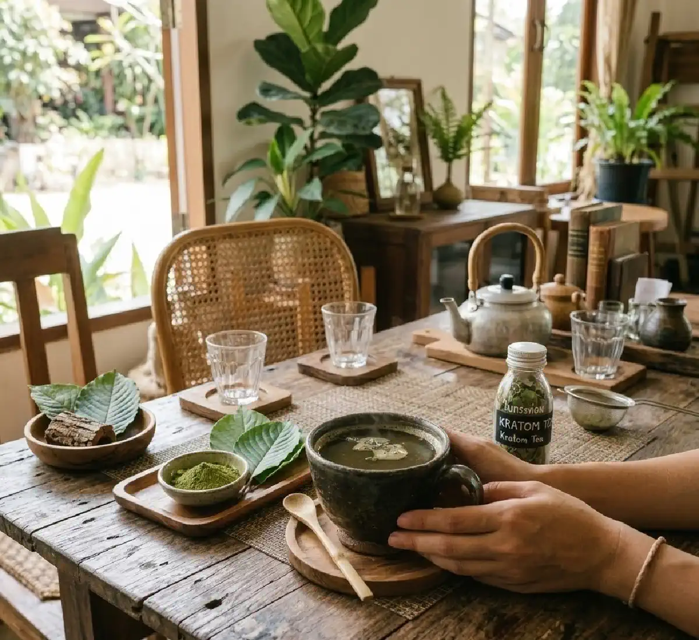

+38(068) 79 72 782
+38(068) 79 72 782Кратом - як чай стає наркотиком
Ілюзія «безпеки» та реальний ризик залежності


Безкоштовна консультація, працюємо цілодобово 24/7
Ілюзія «безпеки» та реальний ризик залежності

Кратом — це рослинна речовина, яку нерідко подають як «натуральний чай», «трав’яний продукт» або «м’який засіб для розслаблення». Саме така подача часто формує хибне відчуття безпеки. На практиці кратом містить психоактивні алкалоїди, здатний впливати на центральну нервову систему, викликати звикання і призводити до формування залежності. За даними NIDA, DEA, FDA та EUDA, кратом може чинити стимулювальну дію у менших дозах і седативно-опіоїдоподібну — у вищих, а також пов’язаний із ризиками залежності, синдрому відміни та інших серйозних ефектів.
Для багатьох людей знайомство з кратомом починається саме з формату «чаю» або порошку рослинного походження. Однак натуральне походження не робить речовину нешкідливою. Якщо засіб змінює настрій, рівень бадьорості, сприйняття болю та емоційний стан, він уже потребує обережного ставлення. У випадку кратому йдеться не просто про напій, а про психоактивний продукт, здатний поступово змінювати поведінку людини і посилювати потяг до повторного вживання. Основні активні компоненти кратому — алкалоїди мітрагінін і 7-гідроксимітрагінін. Ці речовини взаємодіють з рецепторами нервової системи, зокрема з опіоїдними рецепторами, що частково пояснює його анальгезувальні та седативні властивості. При регулярному вживанні такі механізми можуть призводити до формування толерантності: людині потрібна все більша доза для досягнення попереднього ефекту. З часом це підвищує ризик розвитку фізичної та психологічної залежності.
При систематичному вживанні кратому можуть з’являтися різні побічні ефекти. Серед них відзначаються нудота, запаморочення, закрепи, сухість у роті, підвищена пітливість, дратівливість, порушення сну і тривожність. У більш тяжких випадках описуються порушення серцевого ритму, підвищення артеріального тиску, судоми та виражені психічні розлади. Особливо небезпечним стає поєднання кратому з алкоголем, седативними препаратами, бензодіазепінами або іншими психоактивними речовинами, оскільки це посилює навантаження на центральну нервову систему і може призводити до тяжких ускладнень.
У сучасній медицині кратом розглядається не як нешкідливий рослинний напій, а як речовина з психоактивною дією та потенційними ризиками для здоров’я. Тому інформація про його властивості та можливі наслідки вживання має важливе значення для профілактики залежності та збереження здоров’я. Усвідомлене ставлення до подібних речовин допомагає своєчасно розпізнавати ризики і уникати ситуацій, які можуть призвести до формування залежності та розвитку серйозних медичних проблем.
Кратом — це продукт з листя рослини Mitragyna speciosa, яка росте у Південно-Східній Азії. Його листя можуть вживатися у вигляді чаю, порошку, капсул, екстрактів та інших форм. Основними психоактивними компонентами вважаються мітрагінін і 7-гідроксимітрагінін. Саме вони визначають вплив кратому на нервову систему і пояснюють, чому його не можна розглядати як звичайний трав’яний напій. Помилкове сприйняття кратому як «нешкідливого чаю» пов’язане з кількома причинами. По-перше, його часто просувають як натуральний продукт. По-друге, користувачі можуть стикатися з ним не у формі ін’єкцій або таблеток, а саме у вигляді напою або рослинного порошку. По-третє, кратом нерідко рекламують як засіб від стресу, болю або втоми, хоча FDA підкреслює, що він не схвалений як ліки, харчова добавка або безпечний харчовий інгредієнт.
Таке позиціонування створює небезпечну ілюзію контролю. Людина може вважати, що п’є щось схоже на чай, хоча фактично вживає речовину з потенціалом залежності та непередбачуваним ефектом. При цьому суб’єктивне відчуття «натуральності» знижує настороженість і робить вживання більш частим. З часом це може призвести до формування звички, а потім і стійкого потягу до повторного прийому. Додатковий ризик пов’язаний з тим, що дія кратому може суттєво відрізнятися залежно від дозування та індивідуальної чутливості організму. У малих дозах деякі користувачі описують стимулювальний ефект — підвищення бадьорості, концентрації та рівня енергії. Однак при збільшенні дози ефект може ставати протилежним: з’являється виражена седативність, сонливість, зниження реакцій і відчуття розслаблення. Така подвійна дія ускладнює прогнозування реакції організму і підвищує ймовірність передозування.
Ще однією особливістю кратому є відсутність стандартизованого складу. Концентрація активних алкалоїдів може значно відрізнятися залежно від регіону зростання рослини, умов обробки та форми продукту. Це означає, що одна і та сама доза порошку або чаю може містити різну кількість активних речовин, що робить ефект менш передбачуваним і підвищує ризик побічних реакцій. При регулярному вживанні кратому можливе формування толерантності — стану, при якому для досягнення попереднього ефекту потрібна все більша доза речовини. Поступово це може призвести до розвитку фізичної та психологічної залежності. У разі припинення вживання у деяких людей з’являються симптоми відміни: дратівливість, тривожність, безсоння, м’язові болі, зниження настрою та виражене бажання знову прийняти речовину.
Таким чином, незважаючи на рослинне походження, кратом не можна розглядати як звичайний чай або безпечну трав’яну добавку. Його дія пов’язана з активним впливом на центральну нервову систему, а регулярне вживання може супроводжуватися ризиком розвитку залежності та інших несприятливих наслідків для здоров’я. Поінформованість про реальні властивості цієї речовини відіграє важливу роль у формуванні обережного та відповідального ставлення до її вживання.
Вплив кратому на нервову систему залежить від дози та складу конкретного продукту. EUDA та DEA зазначають, що у менших дозах кратом може викликати більш стимулювальні ефекти, а у більших — більш седативні та опіоїдоподібні. Це означає, що у людини можуть спостерігатися зміни бадьорості, настрою, сприйняття болю, уваги та загального психоемоційного стану. Проблема в тому, що реакція на кратом не завжди передбачувана. На неї впливають доза, концентрація активних речовин, форма продукту, наявність домішок та індивідуальна чутливість організму. NIDA вказує, що при вживанні кратому описані психіатричні, серцево-судинні, шлунково-кишкові та респіраторні небажані ефекти.
Саме тому кратом не можна розглядати як нейтральний рослинний напій для «м’якої корекції стану». Він втручається у роботу нервової системи і може ставати частиною стійкого патерну вживання. З фармакологічної точки зору активні алкалоїди кратому впливають на різні нейромедіаторні системи мозку. Насамперед йдеться про взаємодію з опіоїдними рецепторами, а також про вплив на дофамінергічні та серотонінергічні механізми. Такі процеси можуть змінювати відчуття болю, рівень мотивації, емоційний фон і загальний стан бадьорості. Подібні ефекти частково пояснюють, чому деякі люди сприймають кратом як засіб для підвищення працездатності, зняття тривоги або полегшення дискомфорту.
Однак при регулярному вживанні подібний вплив на нейромедіаторні системи може призводити до адаптації організму. Нервова система поступово перебудовує свою роботу під постійну присутність речовини. Це проявляється зниженням чутливості рецепторів, формуванням толерантності та посиленням психологічного потягу до повторного вживання. Людина може почати вживати кратом частіше або збільшувати дозу, намагаючись зберегти попередній ефект. Крім того, вплив на центральну нервову систему може супроводжуватися змінами поведінки. Деякі користувачі відзначають коливання настрою, дратівливість, тривожність, порушення сну або труднощі з концентрацією. В окремих випадках описуються епізоди сплутаності свідомості, вираженої сонливості або, навпаки, психомоторного збудження. Подібні реакції можуть посилюватися при поєднанні кратому з алкоголем, седативними препаратами або іншими психоактивними речовинами.
Звикання до кратому формується тому, що речовина впливає на системи винагороди, самопочуття та емоційну регуляцію. Якщо людина починає використовувати його для розслаблення, бадьорості, зняття тривоги або пригнічення дискомфорту, поступово може з’явитися повторюваний сценарій: напруження — вживання — тимчасове полегшення — новий потяг. NIDA та DEA прямо вказують на ризик психологічної та фізіологічної залежності. Додаткову небезпеку створює те, що звикання може розвиватися поступово. На ранніх етапах людині здається, що вона контролює ситуацію: вживає «іноді», «потроху» або «лише у формі чаю». Але з часом попередній ефект може слабшати, а бажання повторити прийом — посилюватися. Це і стає основою для подальшого формування залежності.
Важливу роль у цьому процесі відіграє розвиток толерантності. При регулярному вживанні нервова система адаптується до дії активних алкалоїдів кратому, і для досягнення звичного ефекту людині може знадобитися все більша доза. Це може призводити до збільшення частоти вживання, переходу на більш концентровані форми продукту або комбінування його з іншими речовинами. З часом вживання може перестати бути епізодичним і перетворюватися на стійку звичку. Кратом починає сприйматися як спосіб регулювання повсякденного стану: підвищити працездатність, покращити настрій, зняти втому або полегшити стрес. Поступово формується психологічна залежність, при якій людині стає складно обходитися без речовини у звичних життєвих ситуаціях.
При спробі скоротити дозу або повністю припинити вживання у деяких людей можуть з’являтися симптоми відміни. Вони можуть включати дратівливість, занепокоєння, порушення сну, зниження настрою, м’язові болі, пітливість і загальне відчуття внутрішнього дискомфорту. Подібні симптоми посилюють бажання знову прийняти речовину, формуючи замкнене коло залежності. Крім того, залежність від кратому може супроводжуватися змінами поведінки та способу життя. Людина може починати планувати день навколо можливості вживання, приділяти менше уваги роботі, навчанню або стосункам з близькими. З часом такі зміни можуть негативно відображатися на соціальній та професійній сфері.
Головна небезпека кратому в тому, що його часто недооцінюють. Це не просто рослинний напій, а психоактивна речовина з ризиком залежності, синдрому відміни та серйозних побічних ефектів. FDA повідомляє, що кратом не визнаний безпечним і не дозволений у США як лікарський препарат, харчова добавка або харчовий інгредієнт. Крім самого кратому, додаткову тривогу викликають продукти з 7-гідроксимітрагініном і висококонцентровані екстракти. FDA окремо попереджала про серйозну шкоду продуктів з 7-OH і вживала заходів щодо обмеження деяких таких товарів. Це важливо, тому що на ринку можуть зустрічатися продукти з сильнішою і менш передбачуваною дією, ніж у вихідної рослинної сировини.
Ще один ризик — варіабельність складу. У різних порошках, капсулах і екстрактах вміст активних речовин може суттєво відрізнятися, тому людина нерідко не розуміє, яку саме дозу психоактивних компонентів вона отримує. Додаткову проблему створює відсутність суворої стандартизації та контролю якості подібних продуктів. На відміну від зареєстрованих лікарських препаратів, багато товарів з кратомом не проходять повноцінні клінічні дослідження і не підлягають однаковим вимогам щодо безпеки, чистоти та стабільності складу. У результаті в деяких зразках можуть виявлятися домішки, включно з іншими психоактивними речовинами, синтетичними сполуками або залишками хімічних реагентів, використаних при обробці сировини.
Серйозні ризики також виникають при поєднанні кратому з іншими речовинами. Одночасне вживання з алкоголем, седативними препаратами, бензодіазепінами або опіоїдними анальгетиками може посилювати пригнічення центральної нервової системи. Це підвищує ймовірність вираженої сонливості, порушення дихання, серцево-судинних ускладнень та інших небезпечних станів. Окрему увагу фахівці звертають на те, що деякі користувачі починають збільшувати дозування, прагнучи посилити ефект або компенсувати розвиток толерантності. У таких ситуаціях зростає ризик передозування і тяжких побічних реакцій. До них можуть належати виражена нудота, блювання, сплутаність свідомості, порушення серцевого ритму, сильна сонливість або психомоторне збудження.
Залежність від кратому зазвичай не виникає одномоментно. Найчастіше спочатку формується психологічна фіксація на ефекті: людина помічає, що після кратому їй легше розслабитися, «зібратися», впоратися з дратівливістю, болем або внутрішнім напруженням. Потім вживання стає регулярним і починає сприйматися як звичний спосіб саморегуляції. Далі може розвиватися толерантність — стан, при якому попередні кількості вже не дають очікуваного ефекту. На цьому тлі підвищується частота вживання або обираються більш концентровані форми. Коли людина намагається скоротити прийом або відмовитися від кратому, з’являються симптоми відміни, і це закріплює залежну поведінку. FDA та NIDA вказують на повідомлення про залежність і withdrawal syndrome, пов’язані з кратомом.
З часом вживання може ставати частиною повсякденного ритуалу. Людина починає приймати кратом перед роботою, щоб підвищити концентрацію, увечері — для розслаблення, або у стресових ситуаціях — для зниження внутрішнього напруження. Таке поведінкове закріплення посилює психологічну залежність і робить відмову від речовини складнішою. При тривалому вживанні можуть з’являтися і фізичні прояви залежності. Симптоми відміни при припиненні прийому кратому у деяких людей включають дратівливість, тривожність, безсоння, зниження настрою, м’язові болі, підвищену пітливість, озноб і виражену втому. Іноді відзначаються шлунково-кишкові симптоми, такі як нудота, дискомфорт у животі або зниження апетиту. Ці прояви можуть посилювати дискомфорт і провокувати повторне вживання речовини.
Окремою проблемою стає те, що багато користувачів довго не сприймають свій стан як залежність. Оскільки кратом часто позиціонується як «рослинний» або «натуральний» продукт, людині може здаватися, що йдеться лише про звичку або спосіб покращити самопочуття. У результаті звернення за медичною допомогою нерідко відкладається, а вживання триває протягом тривалого часу.
Симптоми вживання кратому можуть відрізнятися, але насторожити повинні зміни поведінки, емоційного стану і повсякденних звичок. У людини можуть з’явитися різкі коливання активності, незвична розслабленість, загальмованість або, навпаки, нехарактерна бадьорість після прийому «трав’яного чаю» або порошку. Можливі зміни сну, апетиту, концентрації уваги та соціальної активності. Описані в джерелах ризики також включають психіатричні, серцево-судинні та шлунково-кишкові ефекти.
До поведінкових ознак можуть належати підвищена прихованість, прагнення регулярно вживати певний «чай» або порошок, зміна звичного розпорядку дня, зниження інтересу до раніше значущих занять. Іноді людина починає частіше усамітнюватися, приділяти більше уваги пошуку або купівлі продукту, а також планувати день з урахуванням можливості його вживання. З боку емоційного стану можуть спостерігатися коливання настрою, дратівливість, тривожність або епізоди апатії. У деяких людей відзначається зниження стресостійкості, підвищена чутливість до зовнішніх подразників, труднощі з контролем емоцій. Подібні зміни можуть ставати більш помітними при спробі скоротити вживання.
Фізичні прояви також можуть бути різноманітними. Серед можливих симптомів описуються нудота, сухість у роті, пітливість, закрепи, запаморочення, зниження або підвищення апетиту. В окремих випадках можуть виникати прискорене серцебиття, підвищення артеріального тиску, виражена сонливість або, навпаки, збудження і занепокоєння. Порушення сну — ще одна часта ознака. У людини можуть з’являтися труднощі із засинанням, поверхневий сон, часті пробудження або, навпаки, виражена денна сонливість. Такі зміни поступово відображаються на загальному самопочутті, працездатності та когнітивних функціях.
Наслідки вживання кратому можуть зачіпати як психіку, так і фізичний стан. NIDA вказує на рідкісні, але серйозні ефекти, включно з психіатричними, серцево-судинними, шлунково-кишковими та респіраторними проблемами. DEA також відзначає ризик психотичних симптомів і залежності. Для психіки небезпека пов’язана з формуванням нав’язливого потягу, емоційною нестабільністю, посиленням тривоги у частини користувачів і втратою контролю над частотою прийому. У деяких людей можуть спостерігатися коливання настрою, дратівливість, порушення сну і зниження здатності концентруватися. При тривалому вживанні можливе формування стійкої психологічної залежності, при якій людина починає сприймати кратом як основний спосіб справлятися зі стресом, втомою або емоційним напруженням.
Для організму ризик полягає в токсичному навантаженні, можливих порушеннях з боку серця, дихання, травлення та загального обміну. Описані випадки нудоти, блювання, закрепів, втрати апетиту, зневоднення, а також змін частоти серцевих скорочень і артеріального тиску. В окремих ситуаціях можуть виникати порушення дихання, виражена сонливість або сплутаність свідомості, особливо при високих дозах або поєднанні з іншими речовинами. Окремою проблемою стають домішки, концентрати і комбіноване вживання з іншими речовинами, яке може посилювати шкоду. На ринку можуть зустрічатися продукти з високою концентрацією алкалоїдів або з додаванням інших психоактивних компонентів. Таке поєднання підвищує ризик непередбачуваних реакцій організму і тяжких побічних ефектів.
Також важливо враховувати ризик взаємодії кратому з алкоголем, седативними препаратами, бензодіазепінами та опіоїдними анальгетиками. Подібні комбінації можуть посилювати пригнічення центральної нервової системи і підвищувати ймовірність серйозних ускладнень, включно з порушеннями дихання і серцевої діяльності. FDA та DEA неодноразово підкреслювали, що кратом пов’язаний із серйозними небажаними явищами і не повинен вважатися безпечною заміною доказовим методам лікування болю, тривоги або залежності. Використання психоактивних рослинних продуктів замість медичної допомоги може призводити до затягування лікування і погіршення стану людини.
Якщо вживання кратому стало регулярним, а спроби відмовитися супроводжуються вираженим погіршенням самопочуття, потрібна оцінка лікаря. Детоксикація від кратому — це не «швидке очищення», а медична допомога, спрямована на безпечне проходження періоду відміни, контроль симптомів і зниження ризику ускладнень. Оскільки у частини людей виникають залежність і синдром відміни, допомога нарколога може бути необхідна навіть тоді, коли людина довго вважала кратом «просто чаєм».
У клінічній практиці завдання лікаря зазвичай включає оцінку стану, виключення небезпечних ускладнень, контроль зневоднення, сну, тривоги та інших проявів відміни, а також подальший план лікування залежності. Підхід залежить від тяжкості стану, тривалості вживання і наявності супутніх речовин. Тут важливий саме медичний підхід, а не спроби «перетерпіти» проблему самостійно. Професійну допомогу можна отримати у спеціалізованих наркологічних центрах. Консультація лікаря-нарколога дає змогу оцінити ступінь залежності, визначити ризики для здоров’я і підібрати безпечну стратегію відновлення. За потреби проводиться медикаментозна підтримка, спрямована на полегшення симптомів відміни, стабілізацію сну, нормалізацію емоційного стану та загальне відновлення організму.
Медична допомога може включати детоксикацію, спостереження лікаря, психологічну підтримку і розробку індивідуального плану подальшого лікування. У низці випадків також важливо працювати з причинами вживання — хронічним стресом, тривожними розладами, больовими синдромами або іншими факторами, які могли сприяти формуванню залежності. Отримати консультацію нарколога і медичну допомогу при залежності можна у спеціалізованих клініках UmbrellaPlus у різних містах України. Допомога доступна для пацієнтів у таких містах як (Київ | Харків | Одеса | Дніпро | Львів | Запоріжжя | Черкаси). Залежно від стану пацієнта можлива консультація в клініці або виклик лікаря додому.
Запідозрити залежність від кратому у близької людини можна за поєднанням поведінкових та емоційних ознак. Зазвичай насторожують регулярне вживання під виглядом «натурального чаю», захисна реакція на будь-які запитання, зниження інтересу до колишніх справ, дратівливість без чергового прийому і заперечення проблеми. Додаткові ознаки:
Також можуть з’являтися непрямі зміни у способі життя. Наприклад, людина починає частіше усамітнюватися, змінює режим сну, стає менш залученою до сімейних справ або роботи. Іноді можна помітити, що вживання поступово стає частиною щоденного розпорядку — вранці для бадьорості, вдень для концентрації, увечері для розслаблення. Таке закріплення поведінки нерідко вказує на формування психологічної залежності. З боку самопочуття можуть спостерігатися коливання активності, періодична сонливість або, навпаки, незрозуміла бадьорість, порушення апетиту, підвищена дратівливість і труднощі зі сном. При спробі відмовитися від кратому людина може скаржитися на внутрішнє напруження, тривожність, втому або погіршення настрою.
Вважати кратом безпечною альтернативою наркотикам або алкоголю не можна. Навіть якщо людина використовує його з метою «знизити шкоду», сам кратом має психоактивну дію і потенціал залежності. FDA окремо рекомендує звертатися за професійною допомогою при проблемах з опіоїдною залежністю, тривогою, настроєм або болем, а не покладатися на продукти кратому або 7-OH. Підміна однієї форми залежної поведінки іншою не вирішує основну проблему. Якщо речовина використовується для уникнення болю, тривоги, ломки, емоційного дискомфорту або внутрішнього напруження, ризик нової залежності залишається високим. Тому кратом не можна вважати надійною або медично безпечною заміною алкоголю, опіоїдам або іншим психоактивним речовинам.
На практиці подібні спроби «самолікування» нерідко призводять до формування нової залежності. Людина може почати сприймати кратом як засіб для контролю стану: зняти тривогу, полегшити стрес, покращити настрій або впоратися з втомою. Однак таке використання не усуває причини проблеми і поступово закріплює залежний сценарій поведінки. Крім того, при відмові від однієї речовини і переході на іншу зберігаються ті самі механізми психологічної залежності. Мозок продовжує пов’язувати покращення самопочуття з прийомом психоактивного продукту. З часом це може призводити до посилення толерантності, збільшення доз і частішого вживання.
Окремий ризик пов’язаний з тим, що деякі люди використовують кратом для самостійної спроби впоратися з симптомами відміни опіоїдів або алкоголю. Без медичного контролю такий підхід може бути небезпечним і неефективним, оскільки не враховує індивідуальні особливості організму, супутні захворювання та можливі лікарські взаємодії.
Сучасна наркологія розглядає залежність як комплексне захворювання, яке потребує професійної діагностики та системного лікування. Ефективна допомога зазвичай включає медичну оцінку стану, детоксикацію за потреби, медикаментозну підтримку, психотерапію і роботу з причинами вживання. Якщо людина намагається замінити алкоголь, опіоїди або інші речовини кратомом, це може бути сигналом про наявність невирішеної проблеми залежності. У такій ситуації найбільш безпечним і ефективним рішенням залишається звернення за професійною медичною допомогою, яка дозволяє підібрати доказові та контрольовані методи лікування.
Допомога лікаря потрібна, якщо вживання кратому стало регулярним, доза зростає, з’явилися ознаки втрати контролю, симптоми відміни або погіршення психічного і фізичного стану. Окремо насторожують епізоди вираженої сонливості, сплутаності свідомості, проблеми з диханням, серцебиття, сильна тривога, незвичайні психічні симптоми і поєднання кратому з іншими речовинами. Офіційні джерела вказують на ризик серйозних небажаних ефектів, залежності і withdrawal syndrome. Звернутися за медичною допомогою особливо важливо, якщо людина:
Своєчасне звернення до нарколога допомагає пройти детоксикацію безпечніше, знизити ризик ускладнень і почати повноцінне лікування залежності. Лікар проводить оцінку стану пацієнта, контролює симптоми відміни, за потреби призначає медикаментозну підтримку і формує подальший план лікування та відновлення.
Телефон для консультації та виклику лікаря: +38(050-021-69-57)

Так, ми суворо дотримуємося повної конфіденційності на всіх етапах лікування. Інформація про пацієнта, діагноз та проходження терапії не передається третім особам. Звернення до нас не тягне за собою постановку на облік. Ви можете бути впевнені у безпеці та анонімності.
Програма лікування розробляється індивідуально після консультації з фахівцем. Враховуються вид залежності, її тривалість, фізичний та психологічний стан пацієнта. Такий підхід дозволяє підвищити ефективність терапії та знизити ризик зриву. Ми не використовуємо шаблонні рішення.
Так, ми супроводжуємо пацієнтів і після основного курсу лікування. Проводяться консультації, рекомендації щодо адаптації та профілактики рецидивів. За потреби можлива подальша психологічна підтримка. Це допомагає зберегти результат та повернутися до повноцінного життя.
Номер телефону:
+380 (68) 797 27 82
+380 (50) 021 69 57
Адресу наркологічного центра вашого міста уточнюйте за
телефоном
Працюємо: Київ, Одеса, Львів, Харків, Дніпро, Запоріжжя,
Черкасах, Чугуєві, Чорноморську, Кам'янському
Telegram: t.me/umbrellaplus
Графік работы: Цілодобово